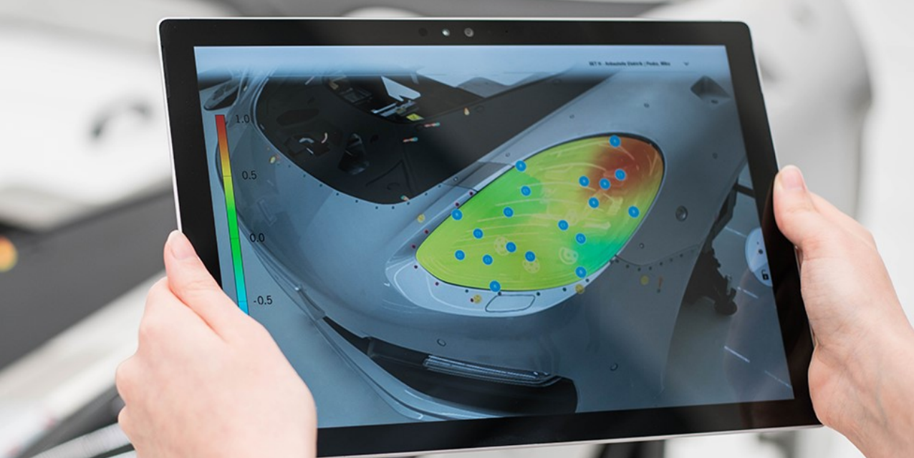

Towards augmented reality in quality assurance processes

MMSys (2018) Workshop Paper
Authors
Natalie Hube, Mathias Müller, Jan Wojdziak, Franziska Hannß, Rainer Groh
Materials
Abstract
Augmented reality (AR) has gained exceptional importance in supporting task performance. Particularly, in quality assurance (QA) processes in the automotive sector AR offers a diversity of use cases. In this paper we propose an interface design which projects information as a digital canvas on the surface of vehicle components. Based on a requirement analysis, we discuss design aspects and describe our application in applying the quality assurance process of a luxury automaker. The application includes a personal view on spatial information embedded in a guided interaction process as a design solution that can be applied to enhance QA processes.